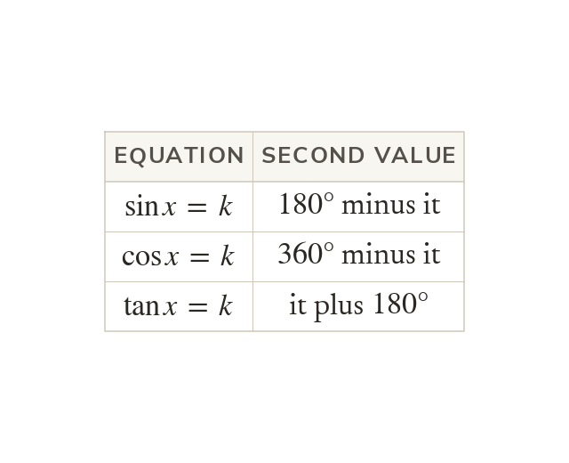
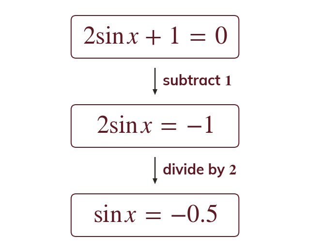
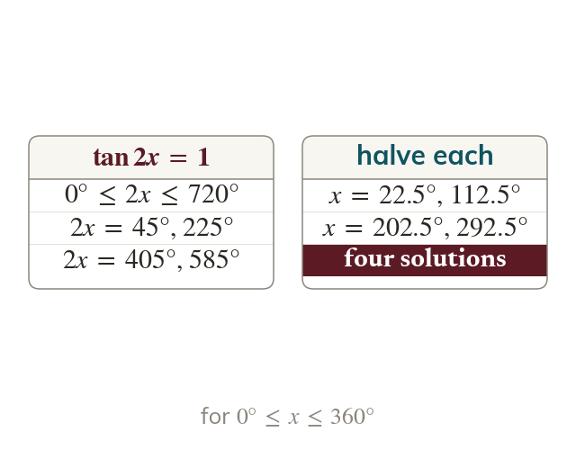

The method
The method starts with the principal value and a second value by symmetry. Adding or subtracting whole periods then fills the range.
A trig equation's answers come back every period, so the whole skill is a reliable method that catches every one inside the stated range. Most exam equations also need tidying up before that method can start.
Work down the page at your own pace. Write every answer in your book first, then click to check it.
Read each card, then follow the worked examples one step at a time.
The method starts with the principal value and a second value by symmetry. Adding or subtracting whole periods then fills the range.

For sine, the second value is minus the principal value. For cosine, it is minus it. For tangent, it is plus
Pick an answer. If it's wrong, the feedback tells you which mistake it was.
Exercise 6E in section Solution of trigonometric equations: the questions that solve over a range wider than to including negative angles.
Read each card, then follow the worked examples one step at a time.

The trig function is made the subject before any inverse is taken. So becomes first.

For the range for is double the range for Every value of is found first, then halved.
Pick an answer. If it's wrong, the feedback tells you which mistake it was.
Exercise 6E : the questions that need rearranging before the inverse is taken. Exercise 6E has no multiple-angle questions.
Finished? Next lesson: 6.11 Trigonometric Identities.
Log in, then search for a code to practise that skill.